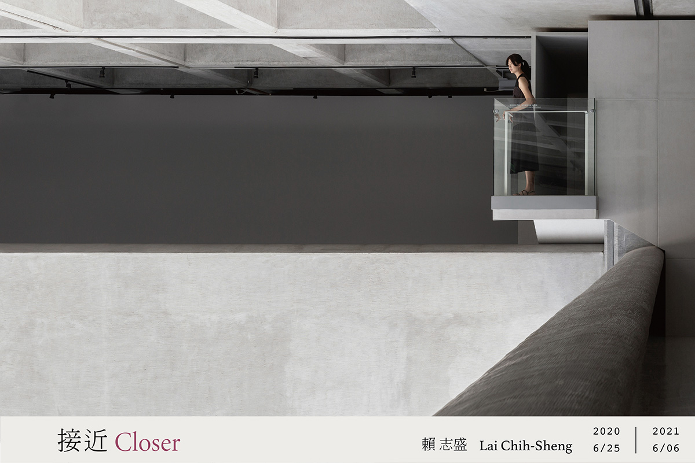

地點
三樓3C 藝想迴廊
* 因疫情發展，暫停開放。
藝想迴廊位於本館大廳挑高三層樓所圍塑的開放區域。有別於館內典型的白盒子展覽場，這裡是高而潘建築師很特殊而具個性的空間規劃。觀眾在此可以往下俯瞰大廳，其開放流動的場域特性，形成獨特的建築語彙。本館於2018年重新定位這個迴廊，陸續邀請當代藝術家聚焦於此環境特性進行限地製作；期待透過建築、空間與人之間不同語言巧妙的相聚，提供觀眾沉澱、互動與交流的場所。
全新年度計畫「接近」由賴志盛製作，以「接近光與風一些」的概念介入空間。他將一樓大廳視為一潭池子，女兒牆是它的池岸，池子的周圍便是三樓迴廊。他在迴廊裡製作了高低不一的平台，持續延伸繞過女兒牆，最終抵達位於挑空處的懸台，探進北美館大廳的「池子」—一個原只能觀看、無法前往的地方。他的靈感來自於鳥類在高處築巢，建造一個生存的空間；以及人們在教堂樑柱上或高牆之間建造通道，走向高空中的懸台，在那裡祈福，以得到精神慰藉。
在這裡，賴志盛並未創造所謂的作品；取而代之的，是建造一條跨越的路徑，邀請觀眾或踮腳或跨越至欄杆之外觀看，在不同的位置與視角去經歷這一方美術館風景；進而對於習以為常的廊道，產生嶄新的感受。觀眾站在突出懸台上，在觀看時同時也被觀看；或碰觸到實體的天花板及女兒牆，或探進「池」內的虛空間，和從一樓直通三樓散射的光與流動的空氣對話，共同形成了作品。
賴志盛在「接近」中以擅長的細膩手法進行干預性的實踐，牽引著觀眾的視線及身體越過界線、鬆動與藝想迴廊的既有關係，重新喚醒人們探索周遭環境的感知能力及身體意識，在參觀過程中得以與藝術相遇，也與自身相遇。